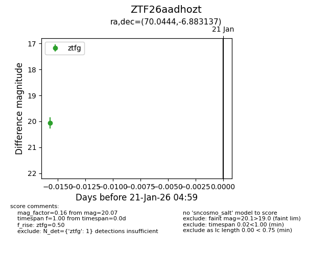
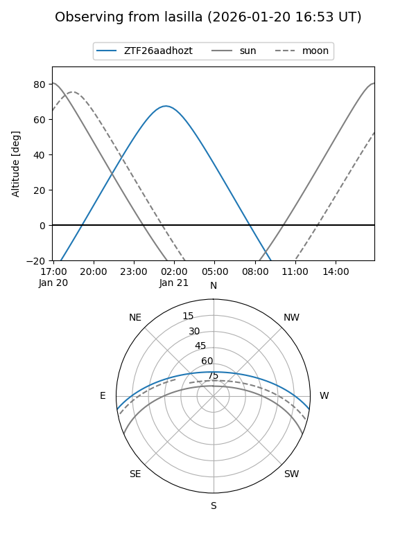
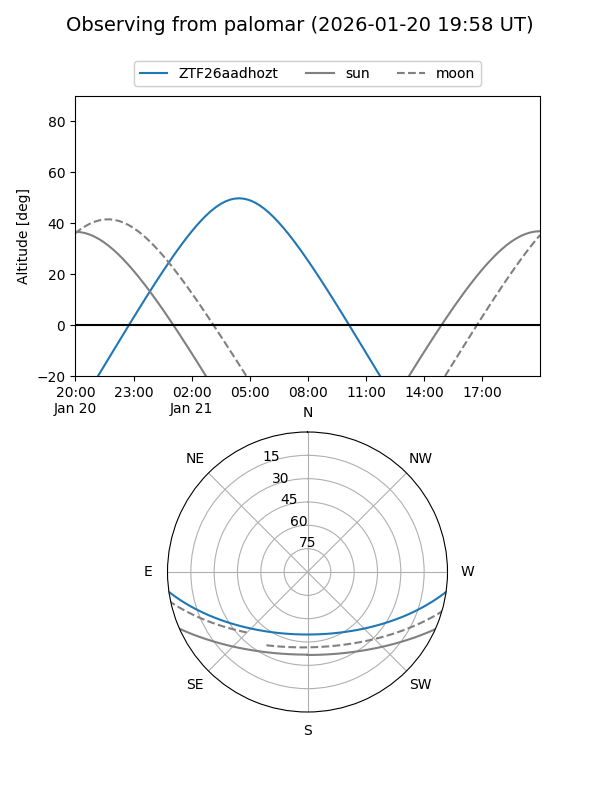

ZTF26aadhozt
Target ZTF26aadhozt at 2026-01-23 05:01
Aliases and brokers:
FINK: link
Lasair: link
ALeRCE: link
alt names
ZTF26aadhozt (ztf,fink_ztf)
Coordinates:
equatorial (ra, dec) = 70.0444,-6.88314
equatorial (HMS+DMS) = 04:40:10.66,-06:52:59.29
galactic (l, b) = (203.4958,-32.24101)
Flags:
Photometry:
last ztfg=20.07
1 ztfg detections
Lightcurve

Visibility


Additional plots